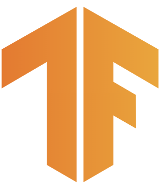

<!DOCTYPE html>
<html lang="ko">

<head>
    <meta charset="utf-8">
    <title>ShareHub</title>
    <link rel="preconnect" href="https://fonts.googleapis.com">
    <link rel="preconnect" href="https://fonts.gstatic.com" crossorigin>
    <link href="https://fonts.googleapis.com/css2?family=Noto+Sans+KR&display=swap" rel="stylesheet">
    <script src="https://cdnjs.cloudflare.com/ajax/libs/xlsx/0.15.5/xlsx.full.min.js"></script>
    <script src="http://code.jquery.com/jquery-latest.js"></script>
    
    
    <style type="text/css">
        * {
            font-family: 'Noto Sans KR', sans-serif;
            list-style: none;
            text-decoration: none;
            border-collapse: collapse;
            margin: 0px;
            padding: 0px;
            color: black;
        }

        body {
            overflow: auto;
            margin: 0px;
            padding: 0px;
            color: black;
        }

        html,
        body {
            margin: 0px;
            padding: 0px;
            width: 100%;
            height: 100%;
        }

        .nav {
            display: flex;
            justify-content: center;
            height: 70px;
        }

        .category:hover {
            font-weight: bold;
        }

        .nav>li {
            float: left;
            margin-right: 18px;
            margin-left: 18px;
            line-height: 60px;
            font-size: 20pt;
        }

        .main_banr{
            justify-content: center;
            display: flex;
        }

        .banr{
            margin-bottom: 10px; 
            position: relative;
        }
        #footer {
            clear: both;
            width: 100%;
            height: 115px;
            padding-top: 20px;
            padding-bottom: 10px;
            background: #3c3c3c;
            position: relative;
            transform: translateY(-100%)
                /* 자기 높이만큼 위로 올라옴 */
        }

        .inner {
            clear: both;
            position: relative;
            margin: 0 auto;
            width: 1180px;
            padding: 0 10px;
            box-sizing: content-box;
        }

        .layoutRight {
            float: right;
        }

        #footer .copyright {
            clear: both;
            padding: 0;
        }

        #footer .link ul li.color a {
            color: #f4c94a;
        }

        .layoutLeft {
            float: left;
        }

        #footer .link ul li {
            display: inline-block;
            margin-right: 20px;
        }

        #footer .link ul li a {
            color: #999;
            font-size: 15px;
        }

        #footer .copyright .info {
            display: block;
            text-align: left;
            margin-bottom: 12px;
        }

        #footer .copyright .info span.address {
            width: 100%;
            margin-right: 0;
        }

        #footer .copyright .info span.copy {
            width: 100%;
            margin-right: 0;
            color: #999;
            text-transform: uppercase;
        }

        #footer .copyright .info span {
            display: inline-block;
            margin-right: 20px;
            color: #999;
            font-size: 15px;
            line-height: 1.8;
        }

        .layoutRight {
            float: right;
        }

        #footer .btnLink .btnLink01 {
            position: relative;
            float: left;
        }

        #footer .btnLink .btnLink01 button {
            position: relative;
            width: 200px;
            height: 40px;
            padding: 0 25px;
            background: #232323;
            color: #999;
            font-size: 15px;
            line-height: 1;
            text-align: left;
            border-radius: 5px;
            box-sizing: border-box;
            cursor: pointer;
        }

        #footer .btnLink .btnLink01 ul {
            display: block;
            position: absolute;
            width: 100%;
            height: auto;
            bottom: 0;
            padding: 12px 22px;
            background: #f4c94a;
            border-radius: 5px;
            box-sizing: border-box;
            opacity: 0;
            overflow: hidden;
            visibility: hidden;
            transition: all .2s ease;
            z-index: 2;
        }

        #footer .btnLink .btnLink01 button:after {
            content: '';
            display: block;
            position: absolute;
            width: 15px;
            height: 10px;
            top: 50%;
            right: 25px;
            margin-top: -5px;
            background: url(image/ico_selectbox.png) no-repeat center center;
            transition: 0.2s;
        }

        #footer .btnLink .btnLink01.show ul {
            bottom: 42px;
            opacity: 1;
            visibility: visible;
        }

        #footer .btnLink .btnLink01 ul {
            display: block;
            position: absolute;
            width: 100%;
            height: auto;
            bottom: 0;
            padding: 12px 22px;
            background: #f4c94a;
            border-radius: 5px;
            box-sizing: border-box;
            opacity: 0;
            overflow: hidden;
            visibility: hidden;
            transition: all .2s ease;
            z-index: 2;
        }

        .no_footer {
            height: auto;
            min-height: 100%;
            padding-bottom: 152px;
        }

        #footer .btnLink .btnLink01 {
            position: relative;
            float: left;
        }

        .display {
            width: 1245px;
            height:400px;
            margin: 0 auto;
            margin-top : 20px;
            margin-bottom : 40px;
        }

        .left{
            width:200px;
            height:500px;
            border-right:1px dashed #5486DD;
            float:left;
            
        }

        #right{
            float:right;
            width : 1040px; 
            height : 400px;
        }

        #display_site{
            border : 0;
        }

        #choose_inform li{
            margin-bottom : 10px;
            margin-left : 10px;
            font-size : 20px;
        }

        #li_title{
            font-size : 23px;
            font-weight : 600;
            color:#5486DD;
        }

        .icon{
            margin-bottom:25px;
        }

        .btnLink .btnLink01 button.rotate::after {
            transform: rotateX(180deg);
            transform-origin: center center;
        }

/*
ShareHub [20]
- 자연어/이미지/동영상/음성에 따른 tutorial 링크와 연결 (동영상은 이미지에 연결함) [5]
- 사용하는 라이브러리에 따라 각각 연결 할 수 있도록 링크 버튼을 배치함 (tensorflow / pytourch) [5]
- tutorial의 정보를 기반으로 자연어/이미지/음성에 세부 링크를 구성함 [10]
    (ex. 이미지>컨볼루셔널 신경망    이미지>이미지 분류     이미지>전이 학습 및 미세 조정  etc)
*/
    </style>
</head>

<body>
    <div class="no_footer">
        <div>
            <ul class="nav">
                <li>
                    <a href="https://www.smu.ac.kr/ko/index.do"></a>
                </li>
                <li>
                    <a href="Home.html" class="category"> Home </a>
                </li>
                <li>
                    <a href="DataWiki.html" class="category"> Data Wiki</a>
                </li>
                <li>
                    <a href="ShareHub.html" class="category"> Share hub</a>
                </li>
                <li>
                    <a class="category" onclick="Colosseum();"> Colosseum </a>
                </li>
                <li>
                    <a href="Forum.html" class="category"> Forum </a>
                </li>
                <li>
                    <a href="https://swai.smu.ac.kr/"></a>
                </li>
            </ul>
        </div>
    
        <div class="main_banr">
            
        </div>

        <div class="display">
                <div class="left">
                    <div class="select" style="margin-bottom:30px;" onchange="change_inform()">
                        <form>
                            <label><input type="radio" name="site" value="Tensorflow" checked> Tensorflow&nbsp;</label>
                            <label><input type="radio" name="site" value="Pytourch"> Pytourch</label>
                        </form>
                    </div>

                    <div class="icon">
                        <p style="font-size:14px; margin-bottom:15px;"><strong>이미지를 클릭하시면 이동합니다.</strong></p>
                        <div style="margin: 0 auto; width:105px;">
                            <a href="https://www.tensorflow.org/tutorials?hl=ko"></a>
                            <a href="https://tutorials.pytorch.kr/"></a>
                        </div>
                    </div>

                    <div style="margin-bottom:110px;">
                        <strong><span style="color:#5486DD;">- 데이터 종류</span><br></strong>
                    <select name="select_sort" id="choose_data" size="1" style="width:180px;" onchange="change_inform()">
                        <option name="choose_data" value="0">--------- 데이터 종류 ---------</option>
                        <option name="choose_data" value="1">이미지 / 비디오</option>
                        <option name="choose_data" value="2">자연어</option>
                        <option name="choose_data" value="3">음성</option>
                    </select>
                    <br>
                    </div>
                </div>

                <div id="right">
                    <ul id = "choose_inform">
                        <li style = "font-size:25px; font-weight:700"><center>[문장을 클릭하시면 <span style="color:#5486DD">링크</span>로 이동됩니다]</center></li>
                    </ul>
                </div>
        </div>
    </div>
    
    <div id="footer">
        <div class="inner">
            <div class="layoutLeft">
                <div class="link">
                    <ul>
                        <li class="color"><a href="https://www.smu.ac.kr/ko/intro/privacyPolicy.do"
                                target="_blank">개인정보처리방침</a></li>
                        <li><a href="https://swai.smu.ac.kr/98/03.php">이메일주소무단수집거부</a></li>
                    </ul>
                </div>
            </div>

            <div class="layoutRight">
                <div class="btnLink">
                    <div class="btnLink01">
                        <button>관련 사이트</button>
                        <ul class="btnLinks" id="dropList01">
                            <li><a href="https://www.smu.ac.kr/" target="_blank"style="font-size:14px;">상명대학교</a></li>
                            <li><a href="http://www.swuniv.kr/" target="_blank" style="font-size:14px;">소프트웨어중심대학협의회</a></li>
                        </ul>
                    </div>
                </div>
            </div>
            <div class="copyright">
                <div class="info">
                    <span class="address">(03016) 서울시 종로구 홍지문 2길 20 상명대학교 SW중심대학사업단</span>
                </div>
                <div class="info">
                    <span class="copy">Copyright By SangMyung University. All Rights Reserved.</span>
                </div>
            </div>
        </div>
    </div>

    <script language="javascript">
        $(document).ready(function () {
            $('.btnLink01').find('button').bind('click', function () {
                if ($(this).parents('.btnLink01').hasClass('show') == false) {
                    $(this).parents('.btnLink01').removeClass('show');
                    $(this).parents('.btnLink01').addClass('show');
                    $(this).addClass('rotate');
                } else {
                    $(this).parents('.btnLink01').removeClass('show');
                    $(this).removeClass('rotate');
                }
                return false;
            });
        });
        
        function Colosseum(){
                alert("구현되지 않는 카테고리 입니다.");
            }

        var type;
        var number;

        function change_inform() {
            number = document.getElementById("choose_data").value;

            if(document.getElementsByName("site")[0].checked == true)
                type = document.getElementsByName("site")[0].value;
            
            else if(document.getElementsByName("site")[1].checked == true)
                type = document.getElementsByName("site")[1].value;

            document.getElementById('choose_inform').innerHTML = "<li style = 'font-size:25px; font-weight:700'><center>[문장을 클릭하시면 <span style='color:#5486DD'>링크</span>로 이동됩니다]</center></li>"
            if(type == "Tensorflow"){
                if(number == 1){ // 이미지 & 동영상
                    document.getElementById('choose_inform').innerHTML += "<li id='li_title'>#Tensorflow - 이미지 & 동영상</li>"
                    document.getElementById('choose_inform').innerHTML += "<li><a href='https://www.tensorflow.org/tutorials/images/cnn?hl=ko'>> 컨볼루셔널 신경망</a></il>"
                    document.getElementById('choose_inform').innerHTML += "<li><a href='https://www.tensorflow.org/tutorials/images/classification?hl=ko'>> 이미지 분류</a></il>"
                    document.getElementById('choose_inform').innerHTML += "<li><a href='https://www.tensorflow.org/tutorials/images/transfer_learning?hl=ko'>> 전이 학습 미 미세 조정</il>"
                    document.getElementById('choose_inform').innerHTML += "<li><a href='https://www.tensorflow.org/tutorials/images/transfer_learning_with_hub?hl=ko'>> TF Hub를 사용한 전이 학습</il>"
                    document.getElementById('choose_inform').innerHTML += "<li><a href='https://www.tensorflow.org/tutorials/images/data_augmentation?hl=ko'>> 데이터 증강</il>"
                    document.getElementById('choose_inform').innerHTML += "<li><a href='https://www.tensorflow.org/tutorials/images/segmentation?hl=ko'>> 이미지 분절화</il>"
                    document.getElementById('choose_inform').innerHTML += "<li><a href='https://github.com/tensorflow/hub/blob/master/examples/colab/tf2_object_detection.ipynb'>> TF Hub를 사용한 객체 감지</il>"
                }
                else if(number == 2){ // 자연어
                    document.getElementById('choose_inform').innerHTML += "<li id='li_title'>#Tensorflow - 자연어(텍스트)</li>"
                    document.getElementById('choose_inform').innerHTML += "<li><a href='https://www.tensorflow.org/text/guide/word_embeddings?hl=ko'>> 단어 임베딩</il>"
                    document.getElementById('choose_inform').innerHTML += "<li><a href='https://www.tensorflow.org/tutorials/text/word2vec?hl=ko'>> Word2Vec</il>"
                    document.getElementById('choose_inform').innerHTML += "<li><a href='https://www.tensorflow.org/text/tutorials/text_classification_rnn?hl=ko'>> RNN을 사용한 텍스트 분류 BERT로 텍스트 분류</il>"
                    document.getElementById('choose_inform').innerHTML += "<li><a href='https://www.tensorflow.org/text/tutorials/classify_text_with_bert?hl=ko'>> BERT로 텍스트 분류</il>"
                    document.getElementById('choose_inform').innerHTML += "<li><a href='https://www.tensorflow.org/text/tutorials/bert_glue?hl=ko'>> TPU에서 BERT를 사용하여 GLUE 작업 해결</il>"
                    document.getElementById('choose_inform').innerHTML += "<li><a href='https://www.tensorflow.org/text/tutorials/nmt_with_attention?hl=ko'>> 어텐션을 사용한 인공신경만 기계 번역</il>"
                    document.getElementById('choose_inform').innerHTML += "<li><a href='https://www.tensorflow.org/tutorials/text/image_captioning?hl=ko'>> 이미지 캡션</il>"
                }

                else if(number == 3){ // 오디오
                    document.getElementById('choose_inform').innerHTML += "<li id='li_title'>#Tensorflow - 오디오</li>"
                    document.getElementById('choose_inform').innerHTML += "<li><a href='https://www.tensorflow.org/tutorials/audio/simple_audio?hl=ko'>> 단순한 오디오 인식</il>"
                    document.getElementById('choose_inform').innerHTML += "<li><a href='https://www.tensorflow.org/tutorials/audio/transfer_learning_audio?hl=ko'>> 오디오 인식을 위한 전이 학습</il>"
                }
            }

            else if(type == "Pytourch"){
                if(number == 1){ // 이미지 & 동영상
                    document.getElementById('choose_inform').innerHTML += "<li id='li_title'>#Pytourch - 이미지 & 동영상</li>"
                    document.getElementById('choose_inform').innerHTML += "<li><a href='https://tutorials.pytorch.kr/intermediate/torchvision_tutorial.html'>> TorchVision 객체 검출 미세조정(Finetuning)</il>"
                    document.getElementById('choose_inform').innerHTML += "<li><a href='https://tutorials.pytorch.kr/beginner/transfer_learning_tutorial.html'>> 컴퓨터 비전(Vision)을 위한 전이학습(Transfer Learning)</il>"
                    document.getElementById('choose_inform').innerHTML += "<li><a href='https://tutorials.pytorch.kr/beginner/fgsm_tutorial.html'>> 적대적 예제 생성</il>"
                    document.getElementById('choose_inform').innerHTML += "<li><a href='https://tutorials.pytorch.kr/beginner/dcgan_faces_tutorial.html'>> DCGAN 튜토리얼</il>"
                    document.getElementById('choose_inform').innerHTML += "<li><a href='https://tutorials.pytorch.kr/beginner/vt_tutorial.html'>> 배포를 위한 비전 트랜스포머(Vision Transformer) 모델 최적화하기</il>"
                }
                else if(number == 2){ // 자연어
                    document.getElementById('choose_inform').innerHTML += "<li id='li_title'>#Pytourch - 자연어(텍스트)</li>"
                    document.getElementById('choose_inform').innerHTML += "<li><a href='https://tutorials.pytorch.kr/beginner/transformer_tutorial.html'>> nn.Transformer 와 TorchText 로 시퀀스-투-시퀀스(Sequence-to-Sequence) 모델링하기</il>"
                    document.getElementById('choose_inform').innerHTML += "<li><a href='https://tutorials.pytorch.kr/intermediate/char_rnn_classification_tutorial.html'>> 기초부터 시작하는 NLP: 문자-단위 RNN으로 이름 분류하기</il>"
                    document.getElementById('choose_inform').innerHTML += "<li><a href='https://tutorials.pytorch.kr/intermediate/char_rnn_generation_tutorial.html'>> 기초부터 시작하는 NLP: 문자-단위 RNN으로 이름 생성하기</il>"
                    document.getElementById('choose_inform').innerHTML += "<li><a href='https://tutorials.pytorch.kr/intermediate/seq2seq_translation_tutorial.html'>> 기초부터 시작하는 NLP: Sequence to Sequence 네트워크와 Attention을 이용한 번역</il>"
                    document.getElementById('choose_inform').innerHTML += "<li><a href='https://tutorials.pytorch.kr/beginner/text_sentiment_ngrams_tutorial.html'>> torchtext 라이브러리로 텍스트 분류하기</il>"
                    document.getElementById('choose_inform').innerHTML += "<li><a href='https://tutorials.pytorch.kr/beginner/translation_transformer.html'>> nn.Transformer와 torchtext로 언어 번역하기</il>"
                }
                else if(number == 3){ // 오디오
                    document.getElementById('choose_inform').innerHTML += "<li id='li_title'>#Pytourch - 오디오</li>"
                    document.getElementById('choose_inform').innerHTML += "<li><a href='https://tutorials.pytorch.kr/beginner/audio_io_tutorial.html'>> Audio I/O</il>"
                    document.getElementById('choose_inform').innerHTML += "<li><a href='https://tutorials.pytorch.kr/beginner/audio_resampling_tutorial.html'>> Audio Resampling</il>"
                    document.getElementById('choose_inform').innerHTML += "<li><a href='https://tutorials.pytorch.kr/beginner/audio_data_augmentation_tutorial.html'>> Audio Data Augmentation</il>"
                    document.getElementById('choose_inform').innerHTML += "<li><a href='https://tutorials.pytorch.kr/beginner/audio_feature_extractions_tutorial.html'>> Audio Feature Extractions</il>"
                    document.getElementById('choose_inform').innerHTML += "<li><a href='https://tutorials.pytorch.kr/beginner/audio_feature_augmentation_tutorial.html'>> Audio Feature Augmentation</il>"
                    document.getElementById('choose_inform').innerHTML += "<li><a href='https://tutorials.pytorch.kr/beginner/audio_datasets_tutorial.html'>> Audio Datasets</il>"                        
                    document.getElementById('choose_inform').innerHTML += "<li><a href='https://tutorials.pytorch.kr/intermediate/speech_recognition_pipeline_tutorial.html'>> Speech Recognition with Wav2Vec2</il>"
                    document.getElementById('choose_inform').innerHTML += "<li><a href='https://tutorials.pytorch.kr/intermediate/speech_command_classification_with_torchaudio_tutorial.html'>> Speech Command Classification with torchaudio</il>"
                    document.getElementById('choose_inform').innerHTML += "<li><a href='https://tutorials.pytorch.kr/intermediate/text_to_speech_with_torchaudio.html'>> Text-to-speech with torchaudio</il>"
                    document.getElementById('choose_inform').innerHTML += "<li><a href='https://tutorials.pytorch.kr/intermediate/forced_alignment_with_torchaudio_tutorial.html'>> Forced Alignment with Wav2Vec2</il>"
                    }
                }
            }
    </script>
</body>

</html>